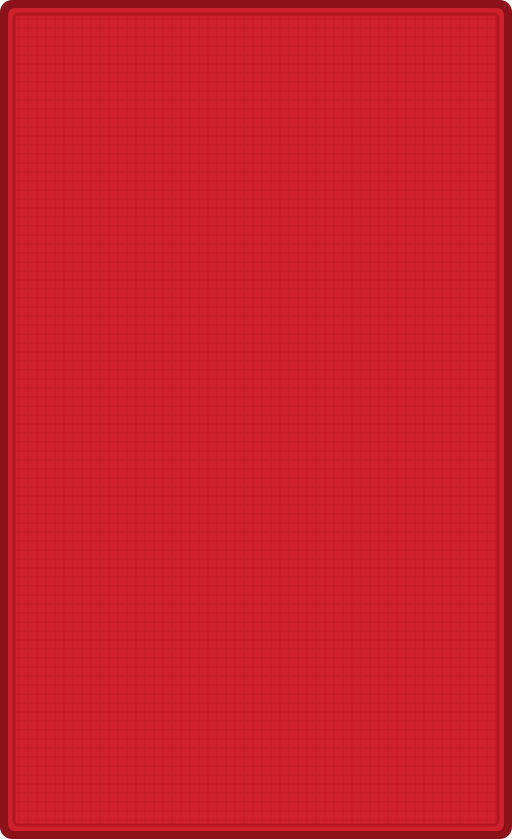

같은 달의 화투를 모아 컴퓨터와 점수로 즐기는 한 판.
새 게임을 시작하면 하던 게임은 사라져요
저장이 차단되어 이 창을 닫으면 진행이 사라집니다.

고 이후 상대가 먼저 나면 고박 2배가 붙습니다.
아직 끝난 차례가 없습니다.
이동 대신 패를 강조합니다. 컴퓨터와 다시 보기에도 같은 속도를 적용합니다.
48장 · 7점 시작 · 보너스패 없음 · 9월 술잔은 열끗 고정. 시간 제한이 없습니다. 컴퓨터도 상대 손패·더미 순서를 보지 않습니다. 피박은 1~7피, 0피는 면제합니다.
쪽·따닥·쓸·뻑 가져오기는 상대 피를 받습니다. 폭탄 후에는 더미만 두 번 사용 가능합니다. 나가리는 0점으로 끝나며 다음 판 배수는 없습니다. 돈·베팅·충전 없이 점수만 기록합니다.
도움 표시를 끄면 패 모서리의 작은 달 숫자가 숨겨집니다.
화투 그림: Wikimedia Commons, Louie Mantia 외, CC BY-SA 4.0 (일부 수정) · 파일별 출처·라이선스
잠깐 쉬어 가세요